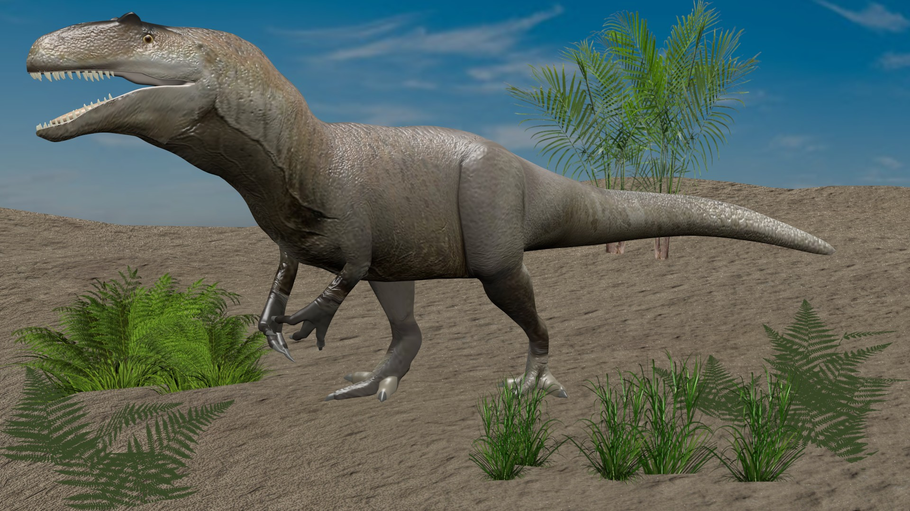
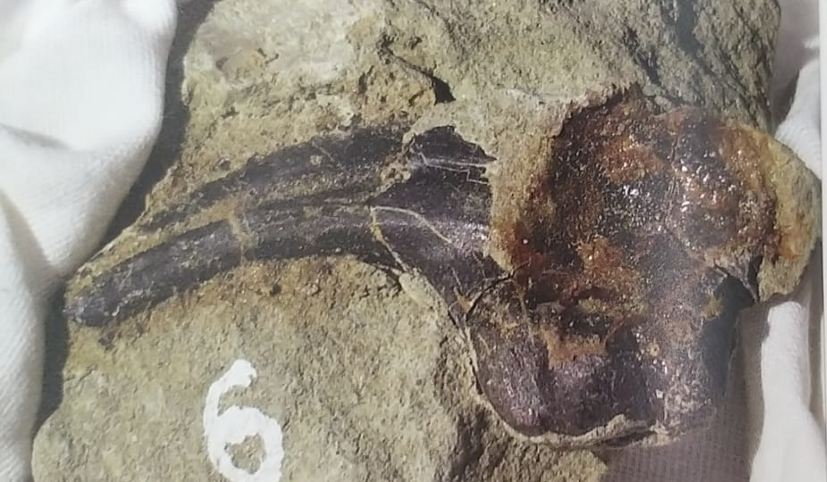

3D реконструкция внешнего облика Аллозавра
Аллозавр
Аллозавр обитал в Якутии в раннем меловом периоде. Имел длинный череп с острыми внутрь направленными зубами. Аллозавр питался травоядными динозаврами, такими как стегозавр, камаразавр и другими животными того времени. Когти и зубы аллозавра найдены в районе зубов Сунтарского улуса

Коготь передней лапы, найденный в Тээтэ